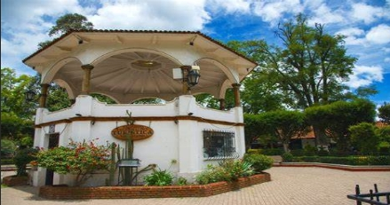
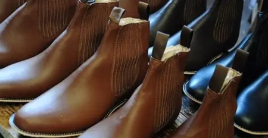
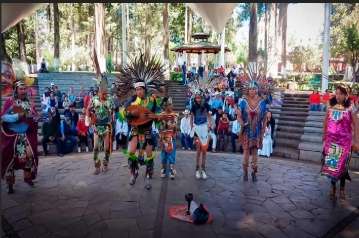
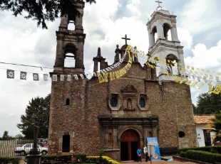
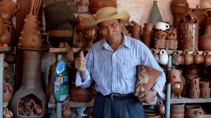
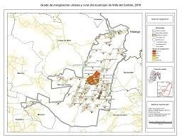
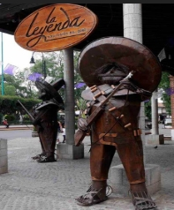

Los principales sectores que sostienen la economía de Villa del Carbón son la artesanía, el comercio y el turismo, los cuales desempeñan un papel fundamental en el desarrollo del municipio.

Los espacios donde productores, artesanos y emprendedores de Villa del Carbón dan a conocer y comercializan sus productos contribuyen al impulso de la economía local y al fortalecimiento del vínculo con la comunidad.

Las celebraciones tradicionales de Villa del Carbón, junto con sus fechas más importantes y costumbres, fortalecen la identidad cultural y la unión de la comunidad.

Los talleres y comercios que mantienen viva la tradición artesanal de Villa del Carbón reflejan su creatividad, técnicas y el valor cultural de los productos elaborados a mano.

La riqueza natural de Villa del Carbón se refleja en las especies de plantas y animales más representativas del municipio, así como en su importancia para el equilibrio ecológico de la región.
La ubicación geográfica y los municipios que colindan con el municipio se presentan de manera clara para facilitar su identificación.

Se destacan datos curiosos del municipio de Villa del Carbón para dar a conocer aspectos interesantes de su historia, cultura y vida cotidiana.
